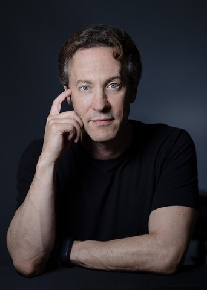
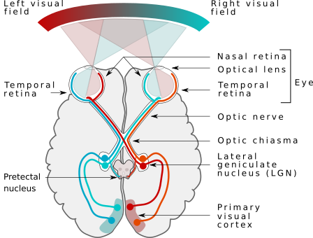

脳と意識
あなたがこの文を読んでいる「今」は、実際には80〜120ミリ秒ほど前の世界だ。リアルタイムの知覚は存在しない。脳は遅れを隠し、遅れた情報を「今」として差し出している。
イーグルマンとセイノフスキーが Science 誌に「視覚的気づきは事後構築（postdiction）である」と発表した年。
同年：シドニーオリンピック開催。米国のITバブルがピークを打ち、3月のナスダック史上最高値から崩壊が始まる。
フラッシュラグ効果の説明として6年間「定説」だったニジャワンの予測モデルが、イーグルマン＆セイノフスキーの論文『Motion Integration and Postdiction in Visual Awareness』で覆された。脳は未来を予測しているのではなく、過去を組み立てていた。
誰かに名前を呼ばれて振り向く。声がした、と感じてから、顔を向けるまでの一瞬。その一瞬の中で、自分はたしかに「今ここ」にいたように思える。
けれど、よく考えると不思議だ。声は空気を振動させ、耳に届き、神経を伝い、脳で処理されて「音」になる。その手間のぶんだけ、聞こえた瞬間には、声はもう鳴り終わっている。
あなたの「今」は、常に少しだけ過去だ。
あなたの意識は、いつも少しだけ遅れている。脳は光や音を受け取ってから、それを「今」として見せるまでに時間を使う。しかもその「今」は、ただ遅れているだけではなく、遅れたあとの情報まで使って組み立てられている。
雷が光って、しばらくしてから音が届く。距離があると、光と音は別々の時刻に感じられる。これは誰でも知っている。光の方が速いからだ、と学校で習った。
では、光がすぐ目の前にあるとき、視覚は瞬時だろうか。多くの人はそう思っている。私もそう思っていた。けれど、そうではない。光が網膜に届いてから、それが「見えた」という感覚として立ち上がるまでには、およそ80〜120ミリ秒かかる。雷と音の関係ほどではないにせよ、あなたの見ている世界は、少しだけ過去の世界だ。
図1 — 光が網膜に届いてから意識される「今」になるまでの4段階。各段のmsは代表値。
この「100ミリ秒」という数字は、小さく見える。0.1秒。まばたき一回よりも短い。けれど脳にとっては、ボールが1メートル以上動いてしまう時間だ。テニスのサーブや野球の速球は、その遅延のあいだに3メートル以上進む。打者がボールを「見てから」振っていたのでは、絶対に間に合わない。
しかもこの遅延は、感覚のモダリティによって違う。耳で聞く音と、目で見る光と、手で触れる振動では、脳に届くまでの時間が揃っていない。にもかかわらず、私たちは「同じ瞬間に起きた」と感じる。脳は遅れを隠すだけでなく、ばらばらの遅れを揃える作業まで裏でやっている。
| 感覚 | 刺激が意識に届くまで | 備考 |
|---|---|---|
| 視覚 | ~80–120 ms | 網膜→視床→一次視覚野を経由 |
| 聴覚 | ~20–50 ms | 蝸牛→脳幹→聴覚野の経路が短い |
| 触覚（手） | ~50–150 ms | 神経繊維の長さ・径で変動 |
| 触覚（足） | ~150–300 ms | 距離が長いぶん、手より遅い |
表1 — 代表的なモダリティ別の知覚遅延。聴覚が最速、足の触覚が最遅。
テレビ業界の人は、この事実を経験的に知っている。放送の映像と音声がずれていても、100ミリ秒以内なら視聴者は気づかない。デビッド・イーグルマンDavid Eagleman
アメリカの神経科学者。スタンフォード大学の教員。時間知覚と意識の研究で知られ、一般向けの著作『脳の時間』『あなたの知らない脳』などがベストセラーになっている。は「私たちの脳には100ミリ秒の“のりしろ”がある」と書いている。脳はそののりしろを使って、遅れを吸収し、ズレを補正している。
言葉だけで説明しても、あまりピンとこない話だ。自分の体でやってみる方が早い。下のボックスは反応時間を測る簡単な装置だ。画面が赤くなった瞬間にクリックする。3回やってみると、あなたの視覚→運動の遅延が数字で出る。
ボックスをクリックすると計測が始まる。画面が赤くなった瞬間に、もう一度クリック。早すぎるとフライングになる。3回やると、あなたの反応時間の平均が出る。
単純な視覚刺激に対する反応時間は、ブラウザ上で測ると250〜400ミリ秒あたりに収まることが多い。実験室の若年成人では220〜250ミリ秒という値もあるが、ブラウザではそこにモニターの表示遅延（60Hzで最大16ms）、入力デバイス（特にBluetooth接続では数十ms）、ブラウザのレンダリング遅延が乗ってくる。さらに加齢で1年あたり約0.5ミリ秒ずつ遅くなり、集中度や睡眠不足でも数十ミリ秒は普通に変動する。350ミリ秒前後でも完全に普通の数字だ。大事なのは、この数字には「光が網膜に届く時間」「脳で処理される時間」「運動指令が手に届く時間」のすべてが含まれていて、画面が赤くなった物理的な瞬間に、あなたの意識はまだ何も見ていないということ。
計測してみて、自分の反応時間が250〜400ミリ秒のあたりに落ち着いたはずだ。「自分は反射神経が悪い」と感じた人もいるかもしれない。でも、この数字が小さくなることはほとんどない。どれだけ訓練しても、100ミリ秒を下回ることは基本的にない。なぜなら、そのうちの大半は意志の問題ではなく、神経の配線の問題だからだ。
図2 — 物理時間と意識時間のずれ。光が目に入った瞬間と「見えた」と感じる瞬間には、約100ミリ秒の空白がある。
よくある誤解
訓練すれば反応時間はゼロに近づけられる。プロアスリートはほぼリアルタイムに反応しているはずだ。
実際は
どれだけ訓練しても神経伝達の物理的下限からは逃れられない。プロの打者が速球を打てるのは反応が速いからではなく、脳が投球の軌道を先読みして、遅れのぶんを埋めているからだ。
よくある誤解
遅延があるなら、世界はカクカクしたビデオのように飛び飛びに見えるはずだ。実際はなめらかに見える。
実際は
脳は遅れた情報を、遅れたままでは出さない。連続的に補間して「なめらかな今」として差し出している。私たちが見ているなめらかさは、世界のなめらかさではなく、脳の編集のなめらかさだ。
ここまでの話は、こう聞こえたかもしれない。「脳が少し遅れて情報を処理しているだけなら、“今”はただ100ミリ秒前の世界ということでしょう?」と。もしそうなら話は単純だ。けれど実際はもっと奇妙なことが起きている。
1958年に発見され、2000年にデビッド・イーグルマンとテレンス・セイノフスキーが論文で決定的な分析を与えた現象がある。フラッシュラグ効果Flash-lag effect
動いている物体の真上にぱっとフラッシュを光らせると、そのフラッシュが動いている物体より後ろにずれて見える錯覚。物理的には完全に同じ位置なのに、見え方はずれる。と呼ばれる。動いている輪の真ん中でフラッシュがぱっと光る。物理的にはフラッシュと輪の中心は同じ位置にある。しかし、あなたの目にはフラッシュが輪の後ろに取り残されているように見える。
下のシミュレーターで試してみてほしい。灰色のリングが左右に動き、中央を通過する瞬間に赤いフラッシュが光る。フラッシュとリングの中心は、物理的にぴったり重なっている。でも見え方はどうか。
灰色のリングが左右に動き、中央を通過する瞬間に赤いフラッシュが光る。フラッシュとリング中心は物理的に完全に同じ位置だ。見え方を観察しよう。
イーグルマン＆セイノフスキー(2000, Science)のフラッシュラグ効果を概念的に再現したもの。実験では、フラッシュ直後にリングが停止する、反転する、といった操作で錯覚の向きが変わることが示された。これが事後構築説の根拠になった。本シミュレーターの位置計算は概念的な可視化であり、論文の実測値を厳密に再現するものではない。
これだけなら、「リングが動いているから、脳が少し先の位置に補正して見せているんだろう」で済む話だ。事実、この現象の最初の説明（1994年、ニジャワン）はまさにそう言っていた。脳は遅延を補うために、動いているものの位置を前方に予測して見せているのだ、と。
ところが、イーグルマンとセイノフスキーは実験で別のことを見つけた。フラッシュの直後にリングが急に止まったり、反対方向に戻ったりすると、フラッシュの見え方も変わる。リングが止まれば、フラッシュは中心に見える。リングが反対方向に動けば、フラッシュは逆方向にずれて見える。
これは、脳が予測しているだけでは説明できない。なぜなら、フラッシュが光った物理的な瞬間には、まだリングがそのあとどう動くかは決まっていない。それなのに、あとの動きが、前の見え方を決めている。上のシミュレーターの「フラッシュ後に反転」ボタンで、この現象をもう一度見てほしい。
"Visual awareness is neither predictive nor online but is postdictive."
視覚的気づきは、予測でも、即時でもない。事後構築だ。
— David M. Eagleman & Terrence J. Sejnowski『Motion Integration and Postdiction in Visual Awareness』Science 287 (2000)
つまり脳は、何かが起きた「瞬間」を、その瞬間にスタンプを押さない。事後構築Postdiction（ポストディクション）
予測（prediction）の反対。未来の情報で過去を説明するのではなく、少し後の情報で過去の出来事を決めること。脳はある出来事が起きてから数十ミリ秒ほど待って、そのあいだに届いた情報まで使って「あの瞬間は何だったか」を決めている。と呼ばれる仕組みで、出来事のあとに届いた約80ミリ秒ぶんの情報まで集めて、そのすべてを使って「あの瞬間はこう見えた」と事後的に決定している。あなたの見ている「今」は、未来の情報が混ぜ込まれて作られた合成物だ。
脳はなぜこんな面倒なことをしているのか。遅らせてから決める、というのは一見すると非効率に見える。でも、脳には切実な事情がある。
第一の事情は、感覚ごとに到達時間が違うことだ。光と音と触覚は、別々の速度で脳に届く。もし届いた順にそのまま意識していたら、夕立のとき雷の光と音は別々の出来事として感じられるはずだ。でも、遠くない雷なら、私たちは光と音を「同時に起きた」と感じる。脳はそれぞれの信号を少し待って、揃えてから意識に出している。
光子の到達と光受容体の反応
~0–5 ms｜物理から化学への変換
光子が角膜と水晶体を通って網膜に届き、光受容体（錐体・桿体）が反応する。ここで光というエネルギーが化学反応（レチナールの異性化）に変換され、さらに神経細胞の電気信号に変わる。
この変換自体はとても速い。ここまでは数ミリ秒の世界。
網膜内の処理と視神経の伝達
~5–30 ms｜まず網膜の中で計算が始まる
光受容体の信号は、網膜の中にある双極細胞・神経節細胞でまず計算される。網膜は単なるフィルムではなく、すでに情報を圧縮し、輪郭や動きを抽出している。
そのあと信号は視神経を通って、脳の中心部にある視床（LGN）に送られる。ここまでで数十ミリ秒。
一次視覚野（V1）と高次視覚野
~60–100 ms｜ここでやっと「見え」が組み立てられる
V1一次視覚野（V1）
後頭葉にある、視覚情報が大脳皮質で最初にたどり着く場所。ここでエッジや動きの向きが抽出され、その情報が高次の視覚野に送られて、色・形・動き・顔などの認識が組み立てられる。で輪郭・向き・動きが抽出され、V2・V4・MTといった高次の視覚野に伝わる。色はV4、動きはMT、顔はFFA、という具合に、見え方の構成要素が脳の別々の場所で並列に処理される。
この段階ですでに刺激から80〜100ミリ秒が経っている。けれどここではまだ「気づき」にはなっていない。処理と意識は別物だ。
統合と事後構築による「気づき」
~100+ ms｜後から届いた情報まで使って仕上げる
ばらばらに計算された要素が統合され、最後に意識に「出力」される。このとき脳は、その出来事のあとに届いた情報まで取り込んで最終判定をする。これが事後構築だ。
フラッシュが光ったあと80ミリ秒のあいだにリングがどう動いたかまで、「あのフラッシュは何だったか」の判定に使われる。意識は記者会見のように、ニュースが出揃ってから発表される。
第二の事情は、さっきの雷の話と同じだ。ばらばらの速度で届く信号を「同時」と感じさせるには、脳はどこかで揃える必要がある。どう揃えるか。いちばん遅い信号が届くまで待つのが合理的だ。待ってから意識に出す。この「待ち時間」が、感じる「今」を過去にしている原因のひとつだ。
図3 — 視覚的気づきを説明する3つのモデル。①は1994年のニジャワン説、②は素朴な説、③がイーグルマンらの提案。

デビッド・イーグルマン
David Eagleman, b.1971 — Neuroscientist
アメリカの神経科学者。スタンフォード大学の教員。時間知覚の研究で知られ、2000年にセイノフスキーとの共同論文で「視覚的気づきは事後構築である」と提唱した。一般向けの著作『脳の時間』『インコグニート』がベストセラーになり、BBCの科学ドキュメンタリー番組のナビゲーターも務めている。
Photo: Christopher Michel, 2024 / CC BY-SA 4.0 / via Wikimedia Commons
イーグルマンはこの仕組みをテレビの生放送に喩えている。生放送はじつは「生」ではない。3秒ほど遅延をかけて送られていて、そのあいだに何かまずいことが起きれば編集で消せるようになっている。脳もそれと同じで、少し遅らせることで、その間に届いた情報を編集材料として使えるようにしている。あなたの意識は、少し前の情報を、少し後の情報で仕上げてから上映している放送局だ。
1958
フラッシュラグ現象、初めて報告される
マッキーが、動いている物体の上でフラッシュを光らせると、フラッシュが物体の後ろに取り残されて見える現象を記述した。当初は視覚の時間分解能の問題として扱われていた。
1983
リベット、意識の0.5秒遅延を実験で示す
ベンジャミン・リベットが、脳刺激実験から「意識に上るには約0.5秒の処理が必要」と主張。意識のタイミングが神経活動より遅れていることが広く知られるようになった。
1994
ニジャワンによる予測モデルの提案
フラッシュラグ効果について、「脳は動いている物体の位置を前方に外挿している」という予測モデルが提案される。以降、これが標準的な説明となった。
2000
イーグルマン＆セイノフスキー、事後構築モデルを提唱
Science 誌に「Motion Integration and Postdiction in Visual Awareness」を発表。フラッシュ後の動きによって錯覚の向きが変わる実験を示し、視覚的気づきは予測でも即時でもなく、事後的に組み立てられていると主張した。この論文が本記事の基盤になっている。
2019
予測符号化による補償モデル
ホーゲンドールンとバーキットが、神経伝達の遅延を予測符号化で補償する数理モデルを発表。事後構築と予測は排反ではなく、脳は両方を併用していることが近年の研究では示唆されている。
私たちは普段、「今ここ」という感覚を自分の一番確かな足場だと思っている。時計や日記は過去、予定表は未来、その間にある「今」だけは、生々しく自分のものだ。疑いようもなく、目の前にある。
でも、そうではなかった。私たちが「今ここ」と感じているその瞬間は、すでに過ぎ去った物理的な瞬間を、脳がその後に届いた情報まで使って組み立てた、あとから作られた合成物だ。生々しいと感じるのは、それが最新鋭の編集で作られているからであって、物理的に最新の瞬間だからではない。
作品・文化への登場
デビッド・イーグルマン『脳の時間』
2011年のエッセイ集（原題: Incognito）に収録された「Brain Time」は、視覚と聴覚の時間統合を日常の話題として書いた最初期の一般向け文章のひとつ。「私たちは常に過去に生きている」という表現はここから広まった。
BBC『The Brain with David Eagleman』
2015年のBBCドキュメンタリー。全6話のうち第1話「What Is Reality?」で、脳が遅延を隠して「今」を組み立てる様子を、野球打者の視線追跡映像とともに紹介している。
野球・テニス・クリケット中継
プロの打者がほぼ完璧に速球を打ち返せるのは、脳が投球の軌道を予測し、遅延を埋めているからだ。中継の解説で「目が良い」と言われることがあるが、正確には「脳の予測が良い」。
この事実は、最初に聞いたときは少しこわい。自分が見ている世界は本物じゃなかったのか、と思う。けれど、よく考えてみるとそうでもない。脳が遅延を隠しているからこそ、私たちはなめらかに歩けるし、ボールをキャッチできるし、誰かと会話ができる。遅延をむき出しにしたら、世界はカクカクした低フレームレートのビデオに見えてしまう。
それに、あとから届く情報で「今」を組み立てるというやり方は、よくよく考えれば合理的だ。一瞬だけの断片だと、騒音なのか信号なのか判断できない。少し待って、その後どうなるかを見てから決める。そうすれば、判断は遅くなるが、正確さは上がる。脳は、正確さのために「今」を少しだけ犠牲にしている。
でも、そのぶん、私たちが普段「リアルタイム」と呼んでいるものの意味は、少しずれてくる。画面のタップ、会話の相槌、相手の目を見る一瞬。そのすべてで、あなたの意識は物理世界より100ミリ秒ほど遅れていて、しかもその「今」は未来の情報で仕上げられている。それでも暮らしは続いていく。脳の編集作業があまりにうまいから、私たちはそれに気づかない。
こう言い換えてもいい。「今この瞬間」に意味があるのは、それが物理的な瞬間だからではなく、脳がそれを「今」と決めて差し出してくれているからだ。そして脳は、それを決めるのに少し時間をかけている。私たちは、その少し先の未来の情報まで借りてきて、過ぎ去った瞬間を「今」として受け取っている。

人間の視覚経路 — 光が脳に届くまで
物体からの光が両眼の網膜（Retina）に映り、左右の視神経（Optic Nerve）が視交叉（Optic Chiasm）で部分的に交差し、外側膝状体（LGN, Lateral Geniculate Nucleus）を経て後頭葉の一次視覚野（V1）に届く。本記事で扱った80〜120ミリ秒は、おおよそこの図全体を信号が一往復する時間にあたる。
Image: Miquel Perello Nieto / CC BY-SA 4.0 / via Wikimedia Commons
Motion Integration and Postdiction in Visual Awareness
本記事の中心になっている論文。フラッシュラグ効果について、予測モデルと即時モデルの両方を否定し、事後構築モデルを提示した。2ページの短い論文だが、読むと実験設計の巧妙さに唸る。
2000年論文の7年後の続編。フラッシュラグだけでなく、類似した4つの錯覚すべてが「動きの信号が位置判断を歪める」という同じ原理で説明できることを示している。事後構築説の総まとめ。
Predictive Coding with Neural Transmission Delays: A Real-Time Temporal Alignment Hypothesis
事後構築の対立仮説だった予測モデルを数理的に再評価した論文。脳は事後構築と予測を場面によって使い分けているらしい、という現在の見方につながる一本。
Motion Processing: How the Brain Stays in Sync with the Real World
ジョンソンらの2023年の研究を解説した短い総説。動く物体に対しては、遅延がほぼ完全に補正されていて、脳内表現が「今」の位置に揃うことが示されている。事後構築と予測がどう共存しているかを考える出発点になる。
e. Tamaki